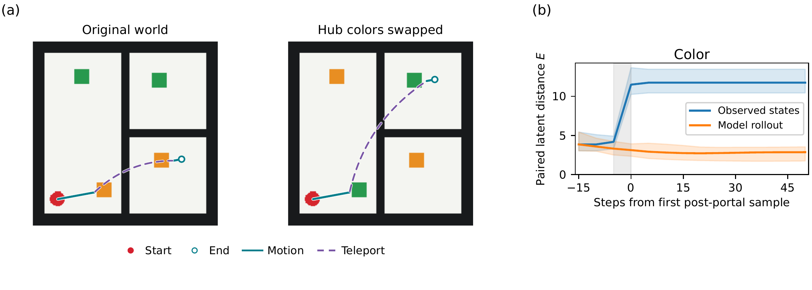

| Endpoint | Central Room | Destination Rooms | ||
|---|---|---|---|---|
| MAE (px) ↓ | R2 ↑ | MAE (px) ↓ | R2 ↑ | |
| Top Location | 4.63 / 6.14 | .919 / .851 | 2.72 / 3.82 | .960 / .925 |
| Bottom Location | 5.14 / 6.34 | .900 / .844 | 2.82 / 4.06 | .958 / .919 |
| Green Cue | 25.05 / 25.43 | .256 / .275 | 29.81 / 29.47 | .180 / .257 |
| Orange Cue | 25.01 / 25.40 | .289 / .318 | 29.72 / 29.72 | .172 / .240 |
| Variant | Location R2 (Lin / MLP) ↑ | Cue R2 (Lin / MLP) ↑ | CEM R1 / R2 (%) ↑ | GD R1 / R2 (%) ↑ |
|---|---|---|---|---|
| Color (green / orange) | .934 / .885 | .224 / .273 | 80.0 / 16.0 | 64.0 / 52.0 |
| Shape (triangle / diamond) | .907 / .857 | .203 / .261 | 88.0 / 24.0 | 76.0 / 40.0 |
| Palette (green / blue) | .930 / .874 | .258 / .259 | 80.0 / 28.0 | 84.0 / 32.0 |
Abstract
Joint-Embedding Predictive Architectures (JEPAs) learn representations that abstract away visual details unnecessary for prediction, but which information is preserved or discarded remains poorly understood. We introduce Tunnel Room, a controlled navigation benchmark that probes this question by making a small visual cue, such as color or shape, determine where a tunnel leads. We study LeWorldModel (LeWM) and find a consistent separation between learning where tunnels are and where they lead. On Tunnel Room Color, linear probes recover tunnel locations with mean R2 = .934, but achieve only .224 when the same coordinates are identified by color. Reconstructions and goal-energy landscapes similarly preserve tunnel geometry. The effect extends to prediction and planning, where planners favor the nearest tunnel even when it is incorrect, and cue swaps that lead to different destinations produce substantially less separation in predicted than observed features. These results highlight a challenge for JEPA-based world models: information that is visually small may nevertheless be critical for predicting the consequences of actions. Why models develop this particular representational asymmetry remains an open question.
Visual Diagnostics & Rollout Analysis
Detached Reconstructions & Goal-Energy Landscapes
Training a detached pixel decoder on frozen LeWM representations preserves room geometry and tunnel locations while washing out cue identity toward the mean of the two colors. Similarly, learned latent goal-energy landscapes assign low energy near multiple tunnel endpoints regardless of which leaf room holds the goal, unlike the true geodesic distance.

Figure 2: LeWM preserves tunnel geometry but weakens cue binding. (a) Two Color observations and their detached-decoder reconstructions. (b) Learned goal energy E and (c) geodesic reference energy as the goal switches between upper and lower leaf rooms (red dots). Yellow denotes low energy.
Controlled Cue Swaps
Swapping the two hub colors while holding tunnel locations, leaf colors, and actions fixed keeps trajectories identical prior to entering the tunnel, then sends the agents to opposite leaf rooms after teleportation. Conditioned only on pre-crossing observations, LeWM's open-loop rollouts substantially understate the true post-teleportation divergence.

Figure 3: Predicted features separate too little after a cue swap. (a) Paired worlds differ only in hub cue assignment; identical action sequences lead to different leaf rooms after teleportation. (b) Paired latent distance between the two worlds for encoded observations (blue) and open-loop LeWM rollouts (orange), showing medians and interquartile ranges over 16 geometries.
The Tunnel Room Benchmark
Tunnel Room consists of a central hub and two leaf rooms connected by paired teleporting tunnels whose positions and cue pairings vary across episodes. We provide three matched cue variants—Color (green/orange), Shape (triangle/diamond), and Palette (green/blue)—and evaluate planners on R1 (correct tunnel nearer) versus R2 (correct tunnel farther) episodes.
Figure 1: Tunnel Room requires cue-guided navigation. (a–c) Color, Shape, and Palette share the same geometry while changing the visual cue identifying paired tunnel endpoints; the red dot denotes the agent. (d) A rank-2 (R2) task where the tunnel leading to the goal is farther from the agent than the incorrect tunnel.
Code & Reproducibility
Our code, Tunnel Room environments, training configs, probing scripts, and frozen paper results are publicly available at https://github.com/YashDagade/jepa_features so researchers can reproduce and extend our experiments.
git clone https://github.com/YashDagade/jepa_features.git
cd jepa_features/stable-worldmodel
pip install -e '.[train,format]'
# Collect Tunnel Room trajectories
python scripts/data/collect_tunnel_rooms.py --help
# Train LeWM with spatial 8x8 aggregation and IDM
python scripts/train/lewm_idm.py --help
# Run linear/MLP coordinate probes on frozen checkpoints
python scripts/probes/location_probe.py --helpCitation
@inproceedings{dagade2026tunnelroom,
title = {Tunnel Room: Probing What JEPA World Models Preserve},
author = {Dagade, Yash and Gillin, Taj},
booktitle = {NeurIPS 2026 Workshop: From Pretrained Representations to Acting Agents},
year = {2026}
}Acknowledgments
This work was done while Yash Dagade was a Member of Technical Staff at Pantheon. We would like to thank the entire Pantheon research team for the resources and guidance that supported this project.
Our implementation builds on Stable WorldModel.